Chapter 5
Example 1 C
Example 2 A
Depreciation per year=(46,000-7,000)/4=$9,750
| Year | 0 | 1 | 2 | 3 | 4 |
|---|---|---|---|---|---|
| Operating profits | 16,500 | 23,500 | 13,500 | (1,500) | |
| Depreciation | 9,750 | 9,750 | 9,750 | 9,750 | |
| Cash flows | (46,000) | 26,250 | 33,250 | 23,250 | 8,250 |
| Cumulative cash flow | (46,000) | (19,750) | 13,500 |
Payback period = 1+19,750/33,250 =1.59 years
=1 year and 7 months
Example 3
EAR=(1+12%/12)12-1=12.68%
Example 4
PV=F
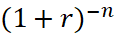
=$4000×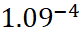
=$28,337PV= $4,000
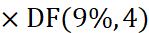
=$4,0000.708=$28,320
Example 5
PV=$5000×AF(12%,15)
=$1000 ×6.811
=$6811
Example 6a
PV=$1000×1/0.12=$8,333
PV=$1000×1/(0.12-0.03)=$11,111
Example 6b
第5年的$1.5m在第0年的现值：
$1.5m×DF(10%,5)= $1.5m×0.621 = $931,500
运用年金现值公式（5年的先付年金）：
$931,500=A ×[AF(10%,5) +1]= A × [3.170+1]
A=$931,500/4.170 = $223,381 (约等于$223,400)
Example 7 D
PV = 7000*AF(10%,5)*DF(10%,2)
=7000*3.791*0.826=21,924
Example 9 C
| Year | 0 | 0-4 | 5 |
|---|---|---|---|
| Cash flow | (40,000) | 12,000 | (15,000) |
| DF(10%) | 1 | 3.170+1 | 0.621 |
| Present value | (40,000) | 50,040 | (9,315) |
| NPV | 725 |
Example 9 continued A
| Year | 0 | 0-4 | 5 |
|---|---|---|---|
| Cash flow | (40,000) | 12,000 | (15,000) |
| DF(15%) | 1 | 2.855+1 | 0.497 |
| Present value | (40,000) | 46,260 | (7,455) |
| NPV | (1,195) |
IRR=10%+725/(725+1195)*5%
=11.9%
Example 11 D
Chapter 6
Example 1 B
Example 2
| Year | 1 | 2 | 3 | 4 |
|---|---|---|---|---|
| beginning balance | 8,000 | 6000 | 4,500 | 3,375 |
| Tax-allowable depreciation | 2,000 | 1,500 | 1,125 | 2,875 |
| Tax benefit on depreciation (30%) | 600 | 450 | 337.5 | 862.5 |
| timing | Y2 | Y3 | Y4 | Y5 |
Example 3 （excel演示）
Example 4 B
Example 5 C
Real rate of interest= (1+10.2)/(1+2%)-1=8%
PV = 10,000/8
Example 6 A
| Year | 0 | 1 | 2 | 3 | 4 |
|---|---|---|---|---|---|
| Sales revenue ($000) | 1,300 | 2,800 | 7,900 | 5,400 | |
| Working capital needed ($000) | 130 | 280 | 790 | 540 | 0 |
| Incremental ($000) | (130) | (150) | (510) | 250 | 540 |
Example 7: Trector
- Calculate the money cost of capital using Fisher effect:
(1+5.7%) x (1+5%) -1= 11%
| Year | 0 | 1 | 2 | 3 | 4 | 5 |
|---|---|---|---|---|---|---|
| $’000 | $’000 | $’000 | $’000 | $’000 | $’000 | |
| Sales (W1) | 433 | 509 | 656 | 338 | ||
| -Variable cost (W2) | 284 | 338 | 439 | 228 | ||
| -Fixed production overheads | 27 | 28 | 30 | 32 | ||
| =taxable cash flow | 122 | 143 | 187 | 78 | ||
| -Tax | (37) | (43) | (56) | (23) | ||
| +CA tax benefits (W3) | 19 | 14 | 11 | 30 | ||
| +Disposal | 5 | |||||
| Net cash flow | 122 | 125 | 158 | 38 | 7 | |
| PV of future cash flow (11%) | 356 | |||||
| Investment | (250) | |||||
| NPV=106,000>0, so financially acceptable. | ||||||
Workings
W1. Sales
| Year | 1 | 2 | 3 | 4 |
|---|---|---|---|---|
| Demand (units) | 35,000 | 40,000 | 50,000 | 25,000 |
| price (/unit) | 12.36 | 12.73 | 13.11 | 13.51 |
| Sales | 432,600 | 509,200 | 655,500 | 337,750 |
W2.variable cost
| Year | 1 | 2 | 3 | 4 |
|---|---|---|---|---|
| Demand (units) | 35,000 | 40,000 | 50,000 | 25,000 |
| Variable cost /unit | 8.11 | 8.44 | 8.77 | 9.12 |
| Variable cost/year | 283,850 | 337,600 | 438,500 | 228,000 |
W3. Capital allowances Tax benefits
| Year | WDV | WDA(25%) | tax saving 30% | timing |
|---|---|---|---|---|
| 1 | 250,000 | 62,500 | 18,750 | 2 |
| 2 | 187,500 | 46,875 | 14,063 | 3 |
| 3 | 140,625 | 35,156 | 10,547 | 4 |
| 4 | 105,469 | 100,469 | 30,141 | 5 |
(b)Total net before-tax cash flow = 122 + 143 + 187 + 78 = $530,000
Total depreciation = 250,000 – 5,000 = $245,000
Average annual accounting profit = (530 – 245)/ 4 = $71,250
Average investment = (250,000 + 5,000)/ 2 = $127,500
Return on capital employed = 100 x 71,250/ 127,500 = 56%>20%
So, the purchase of the machine is recommended.
(c) Strengths of IRR
It takes account of the time value of money.
It also considers cash flows over the whole of the project life and is sensitive to both the amount and the timing of cash flows.
it offers a relative measure, i.e. the method calculates a percentage that can be compared with the company’s cost of capital, and with economic variables such as inflation rates and interest rates.
Weaknesses
it does not measure the absolute increase in company value
When evaluating non-conventional projects, IRR may offer as many IRR values, giving rise to evaluation difficulties.
There is a potential conflict between IRR and NPV in the evaluation of mutually exclusive projects. Where there is conflict, NPV always offers the correct investment advice, IRR does not.
So, IRR is inferior compared to NPV method.
Chapter 7
Lecture example 1
- NPV
| Year | Cash flow ($) | Discount factor @ 10% | Present value |
|---|---|---|---|
| 0 | (40,000) | 1.000 | (40,000) |
| 1-4 | 25,000 | 3.170 | 79,250 |
| 1-4 | (10,000) | 3.170 | (31,700) |
| NPV = | 7, 550, |
Accept the investment
- Sensitivity
- (i) Sensitivity to initial investment = 7,550/40,000 = 18.88%
Comment: if the initial cost increase by 18.875%, increase to 47,550 the project will be rejected.
- (ii) Sensitivity to contribution = 7,550/79,250 = 9.53%
If the contribution decreases by 9.53%, decrease to 22,618, the project will be rejected.
- (iii) Sensitivity to fixed cost = 7,550/31,700 = 23.8%
If the fixed cost increases by 23.8%, increase to 12,380, the project will be not acceptable.
- (iv) cost of capital
This can be found by calculating the project’s IRR.
When i = 10%, NPV = 7550,
When i = 20%, NPV = -40000+(25000-10000)*AF (20%, 4)
= - 40000+15000*2.589= - 1165
IRR = 10%+7550/ (7550+1165)*(20-10) % = 18.67%
(18.67%-10%)/10%=86.7%
If the cost of capital rise from 10% to 18.67%, increase by 86.7%, the project will be rejected.
(c)
- Sensitivity to sales volume:
The relevant cash flow is contribution, so the sensitivity margin will be the sensitivity to contribution as above (9.53%)
- Sensitivity to selling price
If selling price changes, the revenue will change, so the relevant cash flow will be revenue.
PV of revenue = $12.50 ×10,000×3.170 = $396,250
Sensitivity to selling price =7,550/396,250 = 1.9%
If price falls by more than 1.9%, the project will make a loss. It is most sensitive to price
Example 2
Discounted payback period
| Year | 0 | 1 | 2 | 3 | 4 | 5 |
|---|---|---|---|---|---|---|
| Cash flow ($) | -100,000 | 30,000 | 50,000 | 40,000 | 30,000 | 20,000 |
| Discount factor 10% | 1 | 0.909 | 0.826 | 0.751 | 0.683 | 0.621 |
| PV | -100,000 | 27,270 | 41,300 | 30,040 | 20,490 | 12,420 |
| Cumulative CF | -100,000 | -72,730 | -31,430 | -1,390 | 19,100 |
Discounted Payback period=3+1390/20490=2.07 years
Payback period
| Year | 0 | 1 | 2 | 3 | 4 | 5 |
|---|---|---|---|---|---|---|
| Cash flow ($) | 100,000 | 30,000 | 50,000 | 40,000 | 30,000 | 20,000 |
| Cumulative CF | -100,000 | -70,000 | -20,000 | 20,000 |
Payback period=2+20,000/40,000=2.5 years
Example 3
Step1 calculate expected value of PVs of the cash inflows.
Calculate the PV of cash inflows:
| Year | Cash flow ($) | Discount factor(10%) | PV ($) |
|---|---|---|---|
| 1 | 100 | 0.909 | |
| 1 | 200 | 0.909 | |
| 1 | 300 | 0.909 | |
| 2 | 0 | 0.826 | |
| 2 | 100 | 0.826 | |
| 2 | 200 | 0.826 | |
| 2 | 300 | 0.826 | |
| 2 | 350 | 0.826 |
Calculate the EV of the PVs of the cash inflows.
| Year 1 PV | probability | Year 2 PV | probability | Join probability | Total PV | EV of PV |
|---|---|---|---|---|---|---|
| (a) | (b) | © | (d) | (e)=(b)*(d) | (f)=(a)+(c) | (e)*(f) |
| 0.25 | 0.25 | 0.0625 | 90.9 | 5.68125 | ||
| 0.25 | 0.50 | 0.125 | 173.5 | 21.6875 | ||
| 0.25 | 0.25 | 0.0625 | 256.1 | 16.00625 | ||
| 0.5 | 0.25 | 0.125 | 264.4 | 33.05 | ||
| 0.5 | 0.50 | 0.25 | 347 | 86.75 | ||
| 0.5 | 0.25 | 0.125 | 429.6 | 53.7 | ||
| 0.25 | 0.25 | 0.0625 | 437.9 | 27.36875 | ||
| 0.25 | 0.50 | 0.125 | 520.5 | 65.0625 | ||
| 0.25 | 0.25 | 0.0625 | 561.8 | 35.1125 | ||
| Expected value of PVs | 1 | 344.419 | ||||
| Less initial cost | 300 | |||||
| EV of the NPV | 44,419 | |||||
Step2 measure risk
Since the expected value of the NPV is positive, the project should be accepted unless the risk is unacceptably high. The probability that the project will have a negative NPV (the PV of cash flow is less than 300,000) is 37.5% (0.0625+0.0125+0.0625+0.125). this might be considered unacceptably high risk.
Answers to Chapter 8
Example 1: Cavic (dec 2006)
- NPV of cost- one-year replacement cycle
| Year | 0 | 1 |
|---|---|---|
| Purchase | (150,000) | |
| Trade-in-value | 112,500 | |
| Service cost | (10,000) | |
| Clearing cost | (5,000) | |
| Cash flow | (150,000) | 97,500 |
| DF(10%) | 1 | 0.909 |
| PV | (15,000) | 88,628 |
| NPV | -61,372 | |
| AF | 0.909 | |
| EAC | = 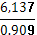 67,516 | |
|
NPV of cost- two-year replacement cycle
| Year | 0 | 1 | 2 |
|---|---|---|---|
| Purchase | (150,000) | ||
| Trade-in-value | 90,000 | ||
| Service | (10,000) | (14,000) | |
| Clearing | (5,000) | (6,250) | |
| Cash flow | (150,000) | (15,000) | 69,750 |
| DF(10%) | 1 | 0.909 | 0.826 |
| PV | (15,000) | (13,635) | (57,614) |
| NPV | -106,021 | ||
| AF | 1.736 | ||
| EAC | =61,073 | ||
NPV of cost- three-year replacement cycle
| 0 | 1 | 2 | 3 | |
|---|---|---|---|---|
| Purchase | (150,000) | |||
| Trade-in-value | 62,000 | |||
| Service | (10,000) | (14,000) | (19,600) | |
| Clearing | (5,000) | (6,250) | 7813 | |
| Cash flow | (150,000) | (15,000) | (20,250) | 34,587 |
| DF(10%) | 1 | 0.909 | 0.826 | 0.751 |
| PV | (150,000) | (13,635) | (16,727) | 25,975 |
| NPV | -154,387 | |||
| AF | 2.487 | |||
| EAC | 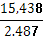 =62,078 | |
|||
The decision:
As the calculatEd EAC are both annual costs, they can be compared to come to a decision. So cavic should replace the fleet every two years as the annual cost of 61,073 is the lowest.
(b)
In an imperfect capital market, the firm cannot get enough money to fund all projects with positive NPV, this is called capital rationing. The causes of capital rationing may be external (hard capital rationing) or internal (soft capital rationing). soft capital rationing is more common than hard capital rationing.
Hard capital rationing
When a company cannot raise external finance even though it wishes to do so, this may be because the company is too small, or too risky, that providers of debt finance may feel uncertain about the company’s future and they will not lend money to company.
Soft capital rationing
Managers impose restrictions on the funds they are prepared to make available for capital investment. One reason for soft capital rationing is that managers don’t want to raise new external finance because
They don’t want to raise new debt to keep debt level and meet future interest payment
They don’t want to raise new equity to avoid dilution of control or just because the transaction costs of new issue are very high
Managers want to remain in control of the growth process
Managers want to make capital investment compete for funds, thereby channel funds to projects with better chances of success and larger margins.
(c)
Capital rationing arises when the company can’t get enough finance to fund all projects with positive NPV. Capital rationing may rise in a single-period or multi-period.
Single-period and multi-period capital rationing
Capital may be rationed in more than one period, i.e. not only in current period at the start of the project (single-period), but in the future periods as well (multi-period). When faced with multi-period capital rationing calls for the use of linear programming.
Project divisibility
To solving single-period capital rationing problems depends on whether projects are divisible or not. A divisible project is one where a partial investment can be made in order to gain a pro rata NPV. A non-divisible project is one where it is not possible to invest less than the full amount of capital.
When projects are divisible, maximizing the NPV can be achieved by ranking projects according to their profitability index and investing sequentially in order of decreasing profitability index. The profitability can be defined as NPV/initial investment. With this method, there will be no investment funds left over.
When projects are non-divisible, maximizing the NPV can be achieved by trying all possible combinations of projects and investing the combination that giving rise to the highest NPV. With this approach, there will usually be some surplus funds remained. Surplus funds can be invested in the money markets (it is a problem of working capital management) in order to increase overall profitability.
Example 2
EAB of project A=3.75/AF(12%,6)=3.75/4.111=0.91
EAB of project B=4.45/AF(12%,7)=4.45/4.564=0.98
EAB of project B is higher than A, so project B should be chosen.
Example 3: Basril (dec 03)
(1) If each project is divisible, PI index should be calculated and rank projects according to PI index.
PI=PV of cash flow/initial investment
Project 1:
| year | 0 | 1 | 2 | 3 | 4 | 5 |
|---|---|---|---|---|---|---|
| Cash flow | (300) | 85 | 90 | 95 | 100 | 95 |
| DF(12%) | 1 | 0.893 | 0.797 | 0.712 | 0.636 | 0.567 |
| PV | (300) | 76 | 72 | 68 | 64 | 54 |
| NPV=34>0 | ||||||
| PI=(300+34)/300=1.11 | ||||||
Project 2:
NPV=-450+140.8×annuity factor (12%, 5) =-450+140.8×3.605=58
PI= (450+58)/450=1.13
Project 3:
| year | 0 | 1 | 2 | 3 | 4 | 5 |
|---|---|---|---|---|---|---|
| Cash flow | (400) | 120 | 120 | 120 | 120 | 124 |
| Inflation rate(3.6%) | (1+3.6%) | (1+3.6%)2 | (1+3.6%)3 | (1+3.6%)4 | (1+3.6%)5 | |
| =124 | =129 | =133 | =138 | =143 | ||
| DF(12%) | 1 | 0.893 | 0.797 | 0.712 | 0.636 | 0.567 |
| PV | (400) | 111 | 103 | 95 | 88 | 81 |
NPV=78>0 PI=(400+78)/400=1.2 |
||||||
According to PI index,
ranking Project investment NPV
3 400 78
2 400 400/450*58=51
1
(2) If none of the projects are divisible, all possible combinations should be considered.
Project investment NPV surplus cash
1+2 750 34+58=92 50
1+3 700 34+78=112 100
Should investment in project 1 and 3, which lead to surplus cash of 100. (and the surplus cash is a question of working capital management)
Example 4: Hawker
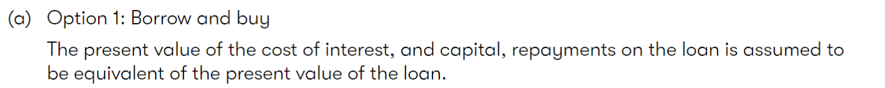
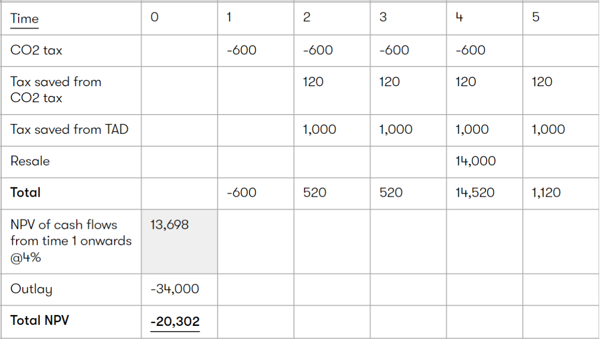
W1: tax benefit on depreciation
Tax benefit on annual depreciation= (34,000-14,000)/4*20%=$1000
Option 2 leasing
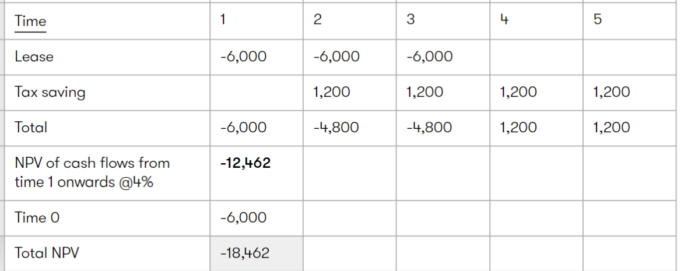
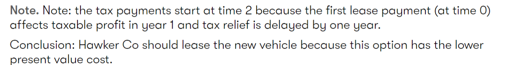
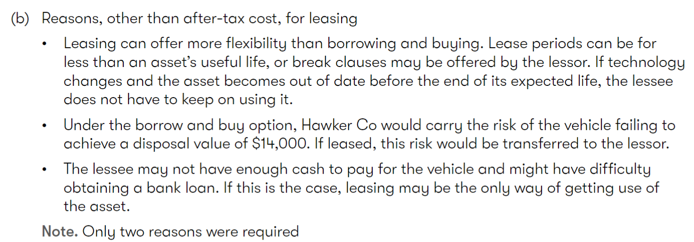
（c）
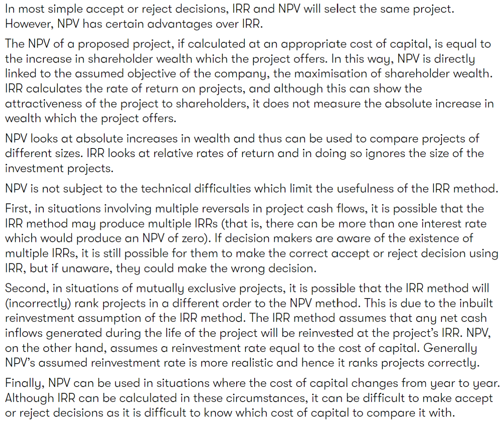